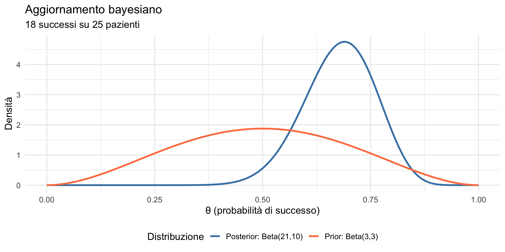
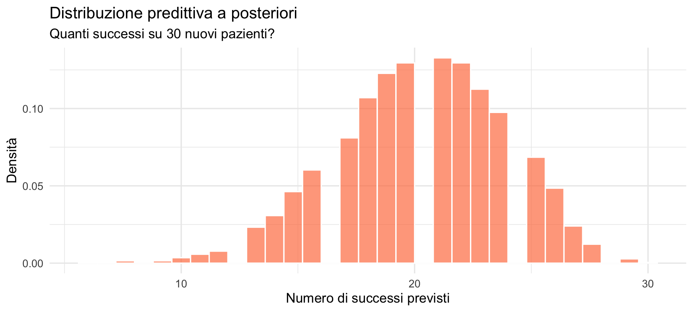
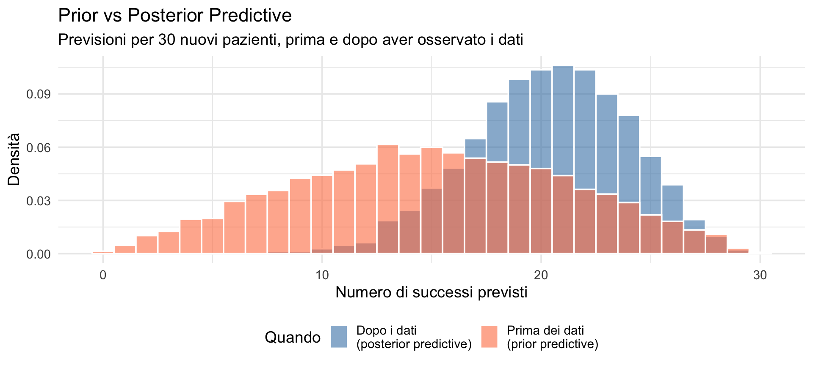

![]()
Posterior: Beta( 21 , 10 )Distribuzione predittiva a posteriori
Fare previsioni dopo aver osservato i dati — Segmento 1
27 febbraio 2026
Dalla lezione precedente a oggi
Nella Lezione 22 abbiamo imparato a verificare le nostre assunzioni prima di osservare i dati, simulando “mondi possibili” dal modello.
Oggi facciamo il passo successivo: dopo aver osservato i dati, cosa possiamo prevedere per il futuro?
Obiettivi
- Comprendere cos’è la distribuzione predittiva a posteriori.
- Capire la differenza rispetto alla distribuzione predittiva a priori.
- Imparare a simulare previsioni dopo aver osservato i dati.
- Applicare la posterior predictive a esempi psicologici.
Parte 1: dall’incertezza iniziale alle previsioni informate
Ricordiamo: la distribuzione predittiva a priori
Nella Lezione 22 abbiamo visto il prior predictive check:
“Prima di vedere i dati, che tipo di osservazioni mi aspetto?”
Simulavamo dati estraendo i parametri dalla distribuzione a priori.
La domanda di oggi
Ora la domanda cambia:
“Dopo aver visto i dati, cosa mi aspetto di osservare in futuro?”
Questa è la distribuzione predittiva a posteriori (posterior predictive distribution).
Un esempio concreto
Immaginiamo di essere psicologi clinici che valutano un nuovo protocollo di mindfulness per l’ansia.
- Abbiamo già condotto uno studio pilota con 25 pazienti.
- Di questi, 18 hanno mostrato un miglioramento clinicamente rilevante.
- Ora vogliamo prevedere cosa succederà nei prossimi 30 pazienti.
Due approcci a confronto
Approccio ingenuo:
“18 su 25 = 72% di successo, quindi mi aspetto 72% × 30 ≈ 22 successi.”
Problema: questo ignora l’incertezza sulla vera probabilità di successo.
Approccio bayesiano:
Incorpora sia i dati osservati sia l’incertezza residua sui parametri.
Le due fonti di variabilità
La distribuzione predittiva a posteriori combina due fonti di variabilità:
- incertezza sui parametri (non sappiamo esattamente quale sia θ);
- variabilità nei dati (anche conoscendo θ, i dati variano).
Entrambe contribuiscono all’incertezza sulle previsioni future. Ricordate: nella Lezione 22 abbiamo visto lo stesso meccanismo nel prior predictive check — la differenza è solo nel punto di partenza.
Parte 2: la matematica (intuizione)
La formula
La distribuzione predittiva a posteriori per nuovi dati \(\tilde{y}\) è:
\[ p(\tilde{y} \mid y) = \int p(\tilde{y} \mid \theta)\, p(\theta \mid y)\, d\theta. \]
\(p(\theta \mid y)\) è la distribuzione a posteriori: ciò che sappiamo su \(\theta\) dopo aver osservato i dati — il risultato che abbiamo imparato a sintetizzare nella Lezione 20;
\(p(\tilde{y} \mid \theta)\) è il modello dei dati: come genereremmo nuovi dati se \(\theta\) fosse noto;
l’integrale rappresenta una media ponderata su tutti i valori possibili di \(\theta\).
La media ponderata dalla posterior
Come nella distribuzione predittiva a priori, costruiamo una media di molte distribuzioni.
La differenza è che ora:
- le distribuzioni riguardano \(\tilde{y}\), cioè dati futuri;
- la media è pesata dalla distribuzione a posteriori di \(\theta\).
Cosa stiamo facendo, passo per passo
- Consideriamo tutti i possibili valori di \(\theta\);
- per ciascun valore, immaginiamo come potrebbero apparire i nuovi dati \(\tilde{y}\);
- pesiamo ciascuna di queste possibilità in base a quanto è plausibile \(\theta\), secondo \(p(\theta \mid y)\).
I valori di \(\theta\) più compatibili con i dati osservati contano di più nella previsione.
Collegamento con la prior predictive distribution
Concettualmente, facciamo la stessa operazione della distribuzione predittiva a priori:
- una media di distribuzioni dei dati;
- su tutti i valori possibili di \(\theta\).
L’unica differenza fondamentale è come pesiamo questa media:
- prima dei dati → usiamo la prior \(p(\theta)\);
- dopo i dati → usiamo la posterior \(p(\theta \mid y)\).
Confronto con la prior predictive distribution
| Prior predictive | Posterior predictive | |
|---|---|---|
| Formula | \(p(y) = \int p(y \mid \theta) p(\theta) d\theta\) | \(p(\tilde{y} \mid y) = \int p(\tilde{y} \mid \theta) p(\theta \mid y) d\theta\) |
| Pesa su | Prior \(p(\theta)\) | Posterior \(p(\theta \mid y)\) |
| Quando | Prima dei dati | Dopo i dati |
| Scopo | Verificare il modello | Fare previsioni |
Messaggio da ricordare
La prior predictive distribution controlla se il modello ha senso.
La posterior predictive distribution dice cosa ci aspettiamo di osservare in futuro.
Come si calcola in pratica?
Non dobbiamo calcolare integrali. Usiamo la simulazione:
- estraiamo un valore di θ dalla distribuzione a posteriori;
- generiamo nuovi dati usando quel θ;
- ripetiamo molte volte.
È lo stesso schema della distribuzione predittiva a priori, ma partiamo dalla posterior invece che dalla prior.
Parte 3: simulazione passo-passo
Torniamo all’esempio: mindfulness per l’ansia
Dati osservati:
- n = 25 pazienti;
- y = 18 successi (miglioramento clinicamente rilevante).
Prior:
- θ ~ Beta(3, 3) → credenza iniziale: il trattamento funziona in circa il 50% dei casi.
Passo 1: calcoliamo la posterior
Con il modello Beta-Binomiale, la posterior è analitica:
\[ \theta \mid y \sim \text{Beta}(\alpha + y, \beta + n - y) \]
Ricordate la Lezione 19: nella famiglia Beta-Binomiale, la posterior si calcola aggiungendo successi e insuccessi ai parametri della prior.
Visualizziamo prior e posterior

Passo 2: simuliamo un nuovo studio
Immaginiamo di trattare 30 nuovi pazienti. Quanti miglioreranno?
Simulazione 1: theta estratto: 0.729 successi previsti: 21 su 30 Ripetiamo: un secondo studio simulato
Simulazione 2: theta estratto: 0.673 successi previsti: 23 su 30 Ogni simulazione dà risultati diversi perché:
- θ varia (incertezza sul parametro);
- i successi variano (variabilità binomiale).
Passo 3: simuliamo molti studi futuri
Notate: negli esempi precedenti il primo argomento di rbeta() e di rbinom() era 1. Ora è n_sim, ovvero 5000.
Cosa contiene successi_sim?
È un vettore di 5000 numeri, ognuno rappresenta:
“In un possibile futuro, quanti pazienti su 30 migliorerebbero?”
Questa è la distribuzione predittiva a posteriori.
Visualizziamo la posterior predictive

Riassumiamo le previsioni
Previsioni per 30 nuovi pazienti:
Media: 20.4 successi Mediana: 21 successi Intervallo 95%: 13 - 27 successiL’intervallo di previsione al 95% ci indica il range plausibile per i futuri risultati.
Ricordiamo: l’approccio ingenuo (sbagliato) prediceva 22 successi su 30 prove future.
Usando la distribuzione predittiva a posteriori otteniamo invece una stima di 20.4 successi: un valore più conservativo.
Otteniamo anche una misura di incertezza relativamente a quanto si osserverà in futuro: su 30 futuri pazienti ci aspettiamo, con un grado di certezza soggettiva del 95%, un numero di successi compreso tra 13 e 27.
In altri termini, con i pochi dati a disposizione, la nostra incertezza su ciò che avverrà in futuro è ancora molto grande.
Parte 4: rispondere a domande cliniche
Domanda 1: qual è la probabilità di almeno 20 successi?
P(successi >= 20) = 60.7 %Ricordate la Lezione 20: possiamo rispondere a qualsiasi domanda probabilistica calcolando la proporzione delle simulazioni che soddisfano la condizione.
Domanda 2: qual è la probabilità che il trattamento funzioni per più della metà?
P(successi > 15) = 90.3 %È altamente probabile che più della metà dei nuovi pazienti migliori.
Domanda 3: qual è la probabilità di meno di 10 successi?
P(successi < 10) = 0.28 %Lo scenario pessimistico è improbabile alla luce dei dati osservati.
Il valore pratico
Queste domande sono esattamente quelle che interessano ai clinici:
- “Posso aspettarmi che funzioni per la maggior parte dei pazienti?”
- “Qual è lo scenario peggiore realistico?”
- “Con quanta confidenza posso consigliare questo trattamento?”
La distribuzione predittiva a posteriori fornisce risposte probabilistiche dirette — non valori-\(p\), non intervalli di confidenza, ma probabilità sugli esiti futuri.
Parte 5: confronto con la prior predictive
Cosa cambia dopo aver visto i dati?
Confrontiamo le previsioni prima e dopo aver osservato i 18 successi su 25.
Confronto visivo

Confronto numerico
PRIOR predictive (prima dei dati):
Media: 15 Intervallo 95%: 3 - 27 POSTERIOR predictive (dopo i dati):
Cosa impariamo?
Prima dei dati: previsioni ampie e incerte, centrate sulla prior.
Dopo i dati: previsioni più precise e spostate verso l’evidenza osservata.
I dati riducono l’incertezza e spostano le previsioni. Questo è lo stesso meccanismo di aggiornamento che abbiamo studiato nelle Lezioni 17–19 — ma ora lo vediamo sulla scala delle previsioni concrete, non solo su quella dei parametri.
Riepilogo
I punti chiave
La posterior predictive risponde: “Cosa mi aspetto in futuro, dato ciò che ho osservato?”
Si calcola simulando: estrai θ dalla posterior, genera dati, ripeti.
Incorpora due fonti di incertezza: sui parametri e sui dati.
Permette di rispondere a domande pratiche in termini probabilistici.
Rispetto alla prior predictive, le previsioni sono più precise e informate dai dati.
Nel prossimo segmento
Vedremo:
- La posterior predictive con variabili continue e con
brms. - Il posterior predictive check: verificare se il modello spiega bene i dati.
- Esempi con punteggi di test psicologici (BDI-II).
- Come usare la posterior predictive per decisioni cliniche.